まず，ターミナルを開いてください．そしてシェルに対して次の操作（右側の欄の下線部）を行ってください．なお，% はプロンプトを示します．
あるファイルと同じ内容のファイルを作成する（ファイルのコピー）には，cp コマンドを使います．
| cp ～ファイルのコピー | |
|---|---|
| ファイル a を作る． |
% date > a[Enter] |
| a をコピーして b という別のファイルを作る．すでに b が存在した場合，その内容は失われる． |
% cp a b[Enter] |
| a と b の中身を見てみる．内容は同じ． |
% cat a[Enter]
1998年 5月19日(火曜日) 19時26分38秒 JST
% cat b[Enter]
1998年 5月19日(火曜日) 19時26分38秒 JST
↑b は a と同じ内容
|
ファイル名の変更には mv コマンドを使います．
| mv ～ファイルの移動（名前の変更） | |
|---|---|
| a，b という２つのファイルがあるとする（上で作ったのであるはず）． |
% ls[Enter] ～ a ～ b ～ |
| a を x に移動する．a がなくなり，x ができる． |
% mv a x[Enter]
% ls[Enter]
～ b ～ x ～ ←a が無くなり x ができる
|
| b を x に移動する．それまで x に入っていた内容（a の内容）は失われる． |
% mv b x[Enter]
% ls[Enter]
～ x ～ ←b が無くなる
|
不要なファイルを削除するには，rm コマンドを使います．
| rm ～ファイルの削除 | |
|---|---|
| ファイル x を削除する． |
% rm x[Enter] |
| 複数のファイルを指定しても良い． |
% rm a b[Enter] |
ここまでで出てきたコマンド
- cp
- ファイルをコピーします（同じ内容の別のファイルを作ります）．
- mv
- ファイルの名前を変えたり，移動したりします．
- rm
- ファイルを削除します．
"*"や"?" などの特殊文字を使ってファイル名のパターンを表して，複数のファイルを一括して指定することができます．このような文字はワイルドカードと呼ばれます．
| ワイルドカードに使われる文字 | |
|---|---|
| 任意の文字列にマッチする | * |
| 任意の１文字にマッチする | ? |
| いずれか１文字にマッチする | [ ] |
パターンの例
- a*
- a から始まるファイル名のパターン
- a*c
- 先頭が a で末尾が c のファイル名のパターン
- ???
- ３文字のファイル名のパターン
- d[135]
- d1，d3，d5 の３つのファイルのパターン
- [a-z]*
- 先頭が小文字のファイル名のパターン
- [^0-9]*
- 先頭が数字ではないファイル名のパターン
| ワイルドカードの使用例 | |
|---|---|
| a で始まるファイルの詳細を表示する． ls コマンドの -l オプションは詳細表示． |
% ls -l a*[Enter] |
| 末尾が ".doc" のファイルを連結して表示する． |
% cat *.doc[Enter] |
| d1.bak，d2.bak，d3.bak の３つのファイルを削除する． |
% rm d[1-3].bak[Enter] |
コンピュータのファイルを保存したり管理したりするためのメカニズムのことを， ファイルシステムと呼びます． このコンピュータのファイルシステムには非常にたくさんのファイルが保存されています． もし仮にそれらが同じ場所にあったとすると， 目的のファイルを見つけるのがかなり大変になります． また他人と同じファイル名を付けないようにも気をつけなければならず， とっても面倒なことになります．
そこで，これらのファイルを用途や所有者ごとに分類・整理して保存するために， UNIXやLinux（や，近代的なオペレーティングシステムのほとんど） のファイルシステムは下図のような木構造になっています．「スタート」をクリックしてください．
この木はひっくり返ったようになっていて，一番根本がてっぺんにあります．てっぺんのディレクトリ "/" は ルートディレクトリと呼び， ファイルシステムの起点になります． その下に bin，etc，usr などのサブディレクトリがあり，usr の下にもさらに bin，etc，local などのサブディレクトリがあります．
ターミナルで pwd コマンドを実行すれば，そのターミナル内で動いているシェルのカレントディレクトリ（シェルが現在処理の対象としているディレクトリ，作業ディレクトリ）を表示します．
| pwd ～カレントディレクトリの表示 | |
|---|---|
| カレントディレクトリを表示する．たぶんホームディレクトリが表示されるはず．"s095000"はあなたのユーザ名だと思ってください． |
% pwd[Enter]
/home/s3/s095000 ←カレントディレクトリ
|
ディレクトリの階層は "/" で区切ります．ひとつのファイルやディレクトリを表すとき，それをルートディレクトリを起点にしたパス（経路）で表す場合を，絶対パス，カレントディレクトリを起点にしたパスで表す場合を相対パスと呼びます．上図の Desktop というディレクトリは，絶対パスだと /home/s3/s095000/Desktop と表されますが，/home というディレクトリからの相対パスで表せば s3/s095000/Desktop となります．
ターミナルを開いた直後のディレクトリは， そのコンピュータにログインした利用者が所有するディレクトリで， ホームディレクトリと呼びます．利用者のファイルは原則としてこのホームディレクトリ以下に置かれます．
そのほかのほとんどのディレクトリは，他人のホームディレクトリを含めて， 利用者が勝手にファイルを作成したりすることはできないようになっています． 例外的に /tmp などは誰でもファイルを置くことができますが， このディレクトリに置いたファイルは， コンピュータの電源を切ると無くなってしまう場合があります．
Windows 2000 を起動したとき，ホームディレクトリは H: ドライブになります．
なお，このコンピュータの /home/s1 ～ /home/s4 以下は， 実際には目の前にあるコンピュータ（ワークステーション）ではなく，サーバと呼ばれる別のコンピュータ上にあり，LAN を使って共有しています．
それでは，カレントディレクトリを変更（移動）してみましょう．カレントディレクトリを変更するには cd コマンドを使います．「スタート」をクリックしてください．
シェルに対して次の操作（右側の欄の下線部）を行ってください．なお，% はプロンプトを示します．
| cd ～カレントディレクトリの移動 | |
|---|---|
| カレントディレクトリを表示する．たぶんホームディレクトリが表示されるはず．"s095000"はあなたのユーザ名だと思ってください． |
% pwd[Enter] /home/s3/s095000 |
| ひとつ上のディレクトリに移動する．".." はひとつ上のディレクトリ（親ディレクトリ）を示す．このディレクトリには自分のホームディレクトリ "s095000" が含まれる． |
% cd ..[Enter] ←ひとつ上に上がる
% pwd[Enter]
/home/s3
|
| カレントディレクトリにある "s095000" というディレクトリに移動する．ホームディレクトリに戻る． |
% cd s095000[Enter] ←ひとつ下に降りる
% pwd[Enter]
/home/s3/s095000
|
| ルートディレクトリに移動する．"/" はルートディレクトリを示す． |
% cd /[Enter] ←ルートディレクトリ
% ls[Enter]
bin boot etc ～ tmp usr
|
| カレントディレクトリ内にあるディレクトリ tmp に移動する．カレントディレクトリを起点にしたディレクトリの指定を相対パスと呼ぶ． |
% cd tmp[Enter] ←相対パス
% pwd[Enter]
/tmp
|
| ディレクトリの指定が "/" で始まっていれば，これはルートディレクトリを起点にした指定になる．これを絶対パスと呼ぶ． |
% cd /usr/bin[Enter] ←絶対パス
% pwd[Enter]
/usr/bin
|
| cd コマンドに引数を指定しなければホームディレクトリに戻る． |
% cd[Enter] ←引数なし % pwd[Enter] /home/s3/s095000 ←ホームディレクトリ |
"."（ピリオド１個）のディレクトリはカレントディレクトリを表します．また ".."（ピリオド２個）のディレクトリはカレントディレクトリの親ディレクトリ（ひとつ上のディレクトリ）を示します．カレントディレクトリがホームディレクトリ (上図では /home/s3/s095000) にあるとき，.. は /home/s3，../.. は /home，../../s1 は /home/s1 になります．
ホームディレクトリ内には，自分でディレクトリ（サブディレクトリ）を作成できます．ディレクトリの作成には mkdir コマンドを使います．
| mkdir ～ディレクトリの作成 | |
|---|---|
| ３つのファイル a, b, c を作る（内容は空）．touch はファイルの修正日時を現在時刻（コマンド実行時の時刻）に変更するコマンド． 引数に指定したファイルが存在しなければ空のファイルを作る． |
% date > a[Enter] % cal > b[Enter] % touch c[Enter] % ls[Enter] ～ a ～ b ～ c ～ |
| mkdir でカレントディレクトリに d というディレクトリを作る．その後，ファイルの一覧を見てみる． |
% mkdir d[Enter]
% ls[Enter]
～ a ～ b ～ c ～ d ～ ← d ができる
|
| ls コマンドに -F オプションを付けると， ファイルの種類が分かる（後ろに "/" が付いていればディレクトリ）． |
% ls -F[Enter]
～ a ～ b ～ c ～ d/ ～
d はディレクトリ↑
|
| ls の引数に普通のファイルを指定すると，そのファイルが（あれば）表示される． ls の引数にディレクトリを指定すると， そのディレクトリの中にあるファイルの一覧が表示される （d は作ったばかりなので，中身は空）． |
% ls a[Enter]
a
% ls d[Enter]
←何も表示されない
|
| d に移動する（カレントディレクトリを移す）．ここでファイルの一覧を見る．d は空なのでやはり何も表示されない． |
% cd d[Enter]
% ls[Enter]
←何も表示されない
|
| "." はカレントディレクトリを示す． |
% ls .[Enter]
←何も表示されない
|
| ".." は上位のディレクトリを示す （但し，"/"（ルートディレクトリ）の .. は "/"）． |
% ls ..[Enter]
～ a ～ b ～ c ～ d ～ ←上のディレクトリが表示される
|
ファイルのコピーやファイル名の変更の際にファイル名にパスを含めれば，ディレクトリをまたがったファイルのコピーや移動ができます．
| ディレクトリへの cp/mv | |
|---|---|
| cp コマンドを使ってファイル a をディレクトリ d にコピーする． ディレクトリ d 内に a ができる． |
% cd[Enter] ←ホームディレクトリに戻る
% cp a d[Enter]
% ls d[Enter]
a
|
| mv コマンドを使ってファイル b，c をディレクトリ d に移動する． カレントディレクトリから b，c がなくなり， ディレクトリ d 内に b，c ができる． |
% mv b c d[Enter] % ls[Enter] ～ a ～ d ～ ←b，c が無い % ls d[Enter] ～ a ～ b ～ c ～ ←b，c はこっちに移った |
| もちろん，コピー／移動先でのファイル名も指定できる． |
% cp a d/e[Enter]
% ls d[Enter]
～ a ～ b ～ c ～ e ～
% cat d/a[Enter]
% cat d/e[Enter]
d/a と d/e の中身は同じはず↑
|
空のディレクトリは，rmdir コマンドで削除できます．
| rmdir ～ディレクトリの削除 | |
|---|---|
| ディレクトリ d を削除する． d が空ではないので，削除できない． |
% rmdir d[Enter]
d: ディレクトリが空ではありません ←エラー
|
| ディレクトリ d の中を空にしてから， d を削除する． a，e は削除する． b，c は一つ上のディレクトリ（".."， 親ディレクトリ）に移動する． |
% cd d[Enter]
% rm a e[Enter]
% mv b c ..[Enter]
% ls[Enter]
←何も表示されない
% cd ..[Enter]
% rmdir d[Enter]
←何も表示されない
% ls[Enter]
～ a ～ b ～ c ～ ←d が削除された
|
中身の入っているディレクトリを丸ごとコピーしたり移動したりするには，cp コマンドや mv コマンドに -r というオプションを付けます．
| ディレクトリ単位のコピー／移動 | |
|---|---|
| ディレクトリ d を作り， そこにファイル a，b，c をコピーする． ディレクトリ d 全体を e というディレクトリにコピーする． この場合，cp コマンドに -r というオプションを付ける． |
% mkdir d[Enter]
% cp a b c d[Enter]
% cp -r d e[Enter]
% ls d e[Enter]
d:
a b c
e:
a b c
↑d と e に同じファイルが入っている
|
| ディレクトリ e を f に移動する． これはディレクトリ名の変更に他ならない． f を d に移動する． d というディレクトリが既にあるので， f はその中に入る． |
% ls -F[Enter] ～ a ～ b ～ c ～ d/ ～ e/ ～ % mv e f[Enter] % ls -F[Enter] ～ a ～ b ～ c ～ d/ ～ f/ ～ % mv f d[Enter] % ls -F[Enter] ～ a ～ b ～ c ～ d/ ～ ←f が無い % ls -F d[Enter] a b c f/ ←こっちに移動した |
なお，中身の入っているディレクトリを中身ごと全部削除するには，rm コマンドに -r オプションを付けてディレクトリを削除してください．
ここまでで出てきたコマンド
- pwd
- カレントディレクトリを表示します．
- cd
- カレントディレクトリを移動します．
- mkdir
- ディレクトリを作成します．
- rmdir
- ディレクトリを削除します．
インターネット上で現在もっとも人気のあるアプリケーションである WWW (World Wide Web) において，閲覧されるコンテント（内容）のことを一般にホームページと呼びます． ただし，厳密な意味でのホームページは， ある単位のコンテントの集まりの起点となっている コンテントのことを指していると考えられます．
例えば，Netscape などの Web ブラウザを起動したときに最初に表示される Web ページもホームページと呼ばれますし，もちろんみなさんのホームページを開いたときに最初に表示される Web ページが皆さんのホームページだと言えます． したがって，この起点以外のコンテントを含めた一般的なものを指す場合には，これを Web ページと呼んだ方が正確でしょう．
なお，ここではみなさん自身に関するコンテントを作成しますから， 以降ではその Web ページを指すものとして 「ホームページ」という用語を用います．
Web ページのレイアウトには，HTML (Hyper Text Markup Language) という，一種の“言語”が用いられます．Hyper Text とは，文書中に関連する情報への指標（ポインタ）を埋め込むことによって，相互に関連付けられた文書です．Markup とは，語句などが文書中でどのような構成要素 （タイトル，見出し，本文など）として使われているか目印をつけることを言います． この目印は<head>とか<img src="photo.jpg">といった形式をしており，一般には HTML タグ（あるいは単にタグ） と呼ばれます．タグに使用する英文字には大文字／小文字の区別はありませんが，小文字の使用を勧めます．
まず最初に，ホームディレクトリに html という名前で，Web ページ用のデータを集めておくディレクトリを作成します．Web ページ用のデータ作成は，このディレクトリ内で行うことにします．
| html ディレクトリの作成 | |
|---|---|
| カレントディレクトリがホームディレクトリであることを確認する． |
% pwd[Enter]
/home/s3/s095000 ←ホームディレクトリ
|
| mkdir コマンドを使って html というディレクトリを作成する． | % mkdir html[Enter] |
| ls コマンドでディレクトリを表示し html ディレクトリが作成されたことを確認する． |
% ls[Enter]
～ html ～ ←html が含まれているか確認
|
では，作成したディレクトリに（また同じネタで申し訳ないけど）自己紹介を書いたテキストファイルを置いてみましょう．カレントディレクトリを html に移し， emacs で profile.txt というファイルを作成してください．
| 自己紹介ファイルの作成 |
|---|
% cd html[Enter] % emacs profile.txt &[Enter] |
一応自己紹介なので， 次のような内容（下線部）を書いてください（もちろん自分のことを書くように）．空白部分ではスペースをタイプし，行末では [Enter] をタイプして改行してください．
自己紹介
名前 ： 和歌山健太郎
出身地 ： 和歌山県和歌山市
生年月日 ： 昭和52年6月23日
趣味 ： 美食
メッセージ： 美食サークルメンバー募集中
書き終わったら C-x C-s をタイプして， ファイルを保存してください （emacs は終了しないでください）． 次に，そのファイルを Netscape で開きます．その前に，講義の Web ページと，これから開くファイルの両方を見ることができるよう，Netscape のウィンドウ（あるいはタブ）をひとつ新規作成しておきます．「ファイル」メニューから「新規作成」を選び，「Navigator ウィンドウ」あるいは「Navigator タブ」を選んでください．
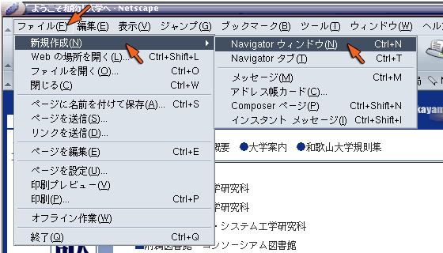
講義の Web ページを表示していないほうのウィンドウ（あるいはタブ）で，「ファイル」メニューから「ファイルを開く」を選ぶか，Ctrl-O をタイプしてください．
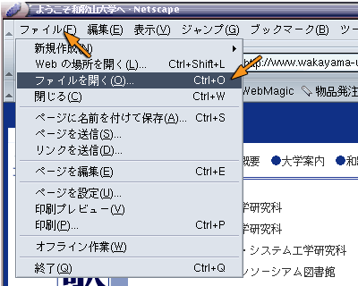
下のようなダイアログウインドウが現れますから，ファイルの一覧の中から html というディレクトリを探して選択した後，「開く」をクリックしてください．
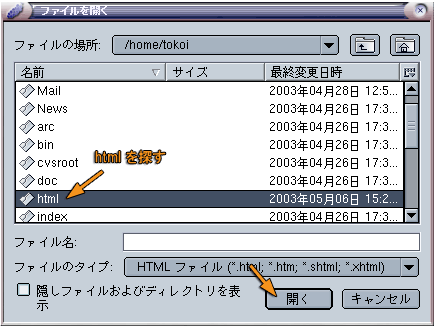
これでディレクトリhtmlの中のファイルの一覧が表示されますが，現在は「ファイルのタイプ」が「HTMLファイル」になっていると思うので，それを「テキストファイル」に変更してください．
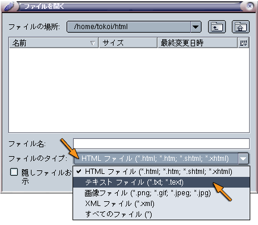
するとファイルの一覧に profile.txt が現れますから，それを選択して「開く」をクリックしてください．
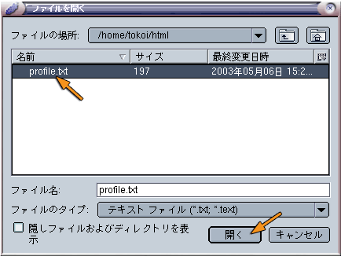
これで今作成したテキストファイルが Netscape 上に表示されます．
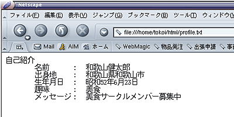
それでは，このテキストファイルを HTML ファイルだと思って，無理矢理 Web ブラウザで表示させてみます．これは，単にファイル名の拡張子を .html に変更するだけです．mv コマンドも使えますが，ここでは emacs 中でバッファを別名で保存します．
バッファの内容を profile.html というファイル名で保存します． C-x C-w をタイプし，ファイル名に profile.html とタイプして改行してください．
| ファイルをprofile.html というファイル名で保存する | |
|---|---|
| C-x C-w をタイプ後 profile.html というファイル名を指定する | 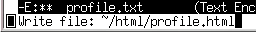 |
先ほどと同様に Netscape の「ファイル」メニューから「ファイルを開く」を選ぶかCtrl-O をタイプしてください． ファイルの一覧の中に profile.html が現れたら， それを選択した後「開く」をクリックしてください．
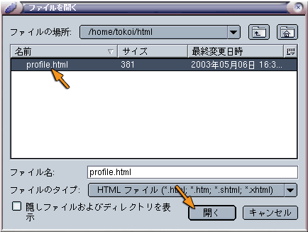
しかし，今度はレイアウトが崩れてしまいます．
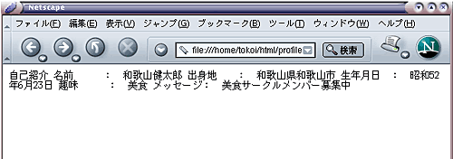
テキストファイルと言えども，コンピュータにしてみれば単なるデータ（２進数）の塊に過ぎません．そのため，それを画面に表示したりプリンタに印刷したりするときには，空白文字や改行文字などを手がかりにしてレイアウトを行っています．しかし，これは画面表示用のソフトウェアや印刷用のソフトウェアが，良かれと思ってやっているに過ぎません．実際，空白や改行を無視するように作られているソフトウェアは，多くの言語処理系（プログラミング言語を取り扱うソフトウェア）をはじめ少なからず存在します．それに空白文字や改行文字だけでは，複雑な文書を見栄えよくレイアウトすることは困難です．
テキストファイルに格納されている文書データは，一般に構造を持ったデータであると言えます．例えばレポートや論文などの文書は，下図のような構造を持っています．文書のレイアウトは，通常このような文書の構造を視覚的に表現したものだと言えます．ところがコンピュータは，人間のように文章の意味をもとに文書の構造を推定することができませんから，コンピュータが文書をレイアウトして表示するには何らかの手がかりが必要になります．
そこでテキストファイルに含まれる文書の構成要素に目印（マーク）を付けることによって，文書の構造を記述する方法が採られます．この作業をマークアップ（マーク付け）と呼びます．こうすることによって，コンピュータはマークを見るだけでその部分の表示方法や処理方法を決定できますし，テキストの一部分をデータとして取り出すことも容易になります．
もちろん，コンピュータが文章を読んで意味を理解し，文書の構造や構成要素（どこが見出しでどこが本文なのかとか）を推定することが可能なら，レイアウトを自動的に決定することが可能になります．これはプログラミング言語のように文法が単純であいまいさが存在しない場合には実用化されています（emacs なんかもそういう機能を持っています）．しかし人間が書いた文書，いわゆる自然言語の文書をコンピュータが読んで構造を自動認識する技術は，まだ一般的だとは言えません．
実際に profile.html をマークアップしてみましょう．「自己紹介」の文字の前後に <h1> と </h1> というタグを入れてください（下線部）．<h1>～</h1>は，この間のテキストが見出し (heading) であることを示します．見出しを示すタグには，他に <h2>～</h2> から <h6>～</h6> まであり，この数字が小さいほど重要度の高い見出しであることを示します．
<h1>自己紹介</h1>
名前 ： 和歌山健太郎
出身地 ： 和歌山県和歌山市
生年月日 ： 昭和52年6月23日
趣味 ： 美食
メッセージ： 美食サークルメンバー募集中
追加できたら emacs で C-x C-s をタイプし，バッファを保存してください．そのあと Netscape の「再読み込み」ボタンをクリックして，表示がどう変わるか確かめてください．
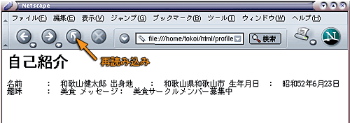
このように「ここは見出しである」とタグで印をつけた部分は，Web ブラウザによって見出しとして適当なスタイルにレイアウトされます．このように HTML によるマークアップは，Web ブラウザが文書を画面に表示する際のレイアウトを決定するのに使用されます．
さらに書式を整えていきましょう．HTML は W3C (World Wide Web Consortium) という組織によって規格化されているので，それにのっとって体裁を整えてやる必要もあります．下線部を追加あるいは修正してください．タイピングに時間がかかるようなら，下線部の内容を Netscape から emacs のバッファにコピー＆ペーストして構いません．
<!DOCTYPE HTML PUBLIC "-//W3C//DTD HTML 4.01 Transitional//EN">
<html lang="ja">
<head>
<title>Profile</title>
</head>
<body>
<h1>自己紹介</h1>
<h2>名前</h2> <p>和歌山健太郎</p>
<h2>出身地</h2> <p>和歌山県和歌山市</p>
<h2>生年月日</h2> <p>昭和52年6月23日</p>
<h2>趣味</h2> <p>美食</p>
<h2>メッセージ</h2> <p>美食サークルメンバー募集中</p>
</body>
</html>
追加できたら emacs で C-x C-s をタイプし，バッファを保存してください．そのあと Netscape の「再読み込み」ボタンをクリックして，表示がどう変わるか確かめてください．今度はどのようにレイアウトされたでしょうか？
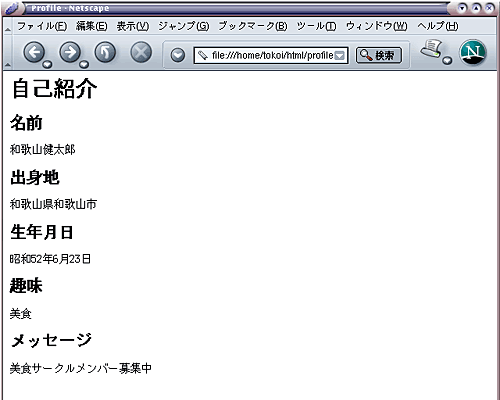
表示されたレイアウトは，<h2>～</h2> で挟んだ部分が（<h1>～</h1> で挟んだ部分より重要度の低い）見出しとして扱われ，<p>～</p> で挟んだ部分は本文として表示されます．<p>～</p> は，この間のテキストが本文中の１つの段落 (paragraph) であることを示します．このように HTML では，レイアウトの制御はマーク（タグ）によって行われ，改行やスペースは単なる区切り文字として扱われます．またマークアップされた文書の構成要素は，そのマークで示された意味をもとにレイアウトされます．
なお，最初に pofile.txt で行ったようなリスト形式のレイアウトを行う場合は，<dl>～</dl> を使用します．<dl>～</dl> の中では，まず キーワードを <dt>～</dt>でマークアップし，それに続くキーワードの説明や定義などを<dd>～</dd>でマークアップします．
<!DOCTYPE HTML PUBLIC "-//W3C//DTD HTML 4.01 Transitional//EN">
<html lang="ja">
<head>
<title>Profile</title>
</head>
<body>
<h1>自己紹介</h1>
<dl>
<dt>名前</dt> <dd>和歌山健太郎</dd>
<dt>出身地</dt> <dd>和歌山県和歌山市</dd>
<dt>生年月日</dt> <dd>昭和52年6月23日</dd>
<dt>趣味</dt> <dd>美食</dd>
<dt>メッセージ</dt> <dd>美食サークルメンバー募集中</dd>
</dl>
</body>
</html>
変更できたら emacs で C-x C-s をタイプし，バッファを保存してください．そのあと Netscape の「再読み込み」ボタンをクリックして，表示がどう変わるか確かめてください．
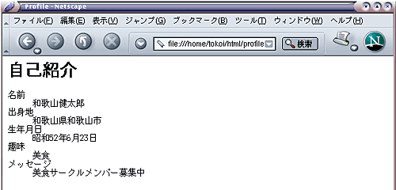
この HTML ファイルの構造は下図のように捉えることができます．

<!DOCTYPE ....> の１行は文書型宣言といい，この文書が HTML 文書であることを宣言します．これは HTML が汎用のマークアップ言語である SGML (Standard Generalized Markup Language) を用いて定義されていることを示します．このように他の言語を定義することが可能な言語のことをメタ言語と言いい，SGML
のほかに XML (Extensible Markup Language) があります．最新の HTML は XML によって再定義され，XHTML として規格化されています．なお，文書型宣言はタグではありません．
<html>～</html> でマークされた部分に HTML 文書を記述します．HTML 文書はヘッダ部とボディ部からなります．
<head>～</head> でマークアップした部分はヘッダ部と呼ばれ，ここに Web ページのタイトルなど，様々な属性情報を記述します．<title>～</title> でマークアップしたものが Web ページのタイトルとなり，Web ブラウザのタイトルバー等に表示されます．Web ページには必ずタイトルを付けなければなりません．
<body>～</body> でマークアップした部分に記述します．この部分をボディ部と呼びます．
多くの Web サーバソフトウェアは，URL に含まれる HTML ファイルのファイル名を省略したとき（URL の最後が "/" で終っている時）に，特定の HTML ファイルを表示するように設定されています（その URL のディレクトリ一覧が表示される場合もあります）．和歌山大学で運用している Web サーバの多くは，この場合 index.html というファイルを表示するよう設定されています．
例えば http://www.wakayama-u.ac.jp/ を開いた時には，j実際には http://www.wakayama-u.ac.jp/index.html が表示されます．そこで，皆さんの Web ページの先頭のページ（トップページ，いわゆるホームページ）を，このファイル名で作成してみましょう．
emacs で C-x C-f をタイプして，ファイル名に index.html を指定してください．emacs コマンドの引数に index.html を指定しても構いません（その場合は pwd コマンドでホームディレクトリの下の html というディレクトリにいることを確認してください）．
| index.html というファイルを作成する | |
|---|---|
| C-x C-f をタイプ後 index.html というファイル名を指定する | 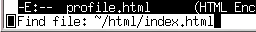 |
このファイルには， 次のような内容を書いてください．言うまでもないと思いますが，"Kentaro's" とか「和歌山健太郎」なんてのは適当に変更してください．
<!DOCTYPE HTML PUBLIC "-//W3C//DTD HTML 4.01 Transitional//EN">
<html lang="ja">
<head>
<title>Kentaro's page</title>
</head>
<body>
<h1>和歌山健太郎のホームページ</h1>
<p>和歌山健太郎のホームページへようこそ．</p>
<ul>
<li>自己紹介</li>
<li>時間割</li>
</ul>
</body>
</html>
出来上がったら， C-x C-s でファイルを保存し，Netscape で profile.html を読み込んだのと同様に「ファイル」メニューから「ファイルを開く」を選んで index.html を読み込んでください．
このページ (index.html) 上の特定個所をクリックして， 別のページを表示できるようにしてみましょう．このように HTML ファイルから別の HTML ファイルを参照することを，「リンクを張る」と言います．いま emacs は index.html を編集している状態だと思いますから， それに下線部の内容を追加してください．
<!DOCTYPE HTML PUBLIC "-//W3C//DTD HTML 4.01 Transitional//EN">
<html lang="ja">
<head>
<title>Kentaro's page</title>
</head>
<body>
<h1>和歌山健太郎のホームページ</h1>
<p>和歌山健太郎のホームページへようこそ．</p>
<ul>
<li><a href="profile.html">自己紹介</a></li>
<li>時間割</li>
</ul>
</body>
</html>
出来上がったら C-x C-s でファイルを保存し，Netscape の「再読み込み」ボタンをクリックしてください．“自己紹介”の文字の色が変わっていると思いますから， それをクリックしてください． 先ほど作った自己紹介のページが表示されましたか？
その他の HTML タグHTML には他にも多くのタグが存在します．別のページに HTML の概要を簡単にまとめてありますから参考にしてください．他人のページへリンクを張る際には，この中の「他人のホームページへのリンクについて」にも目を通して置いてください．